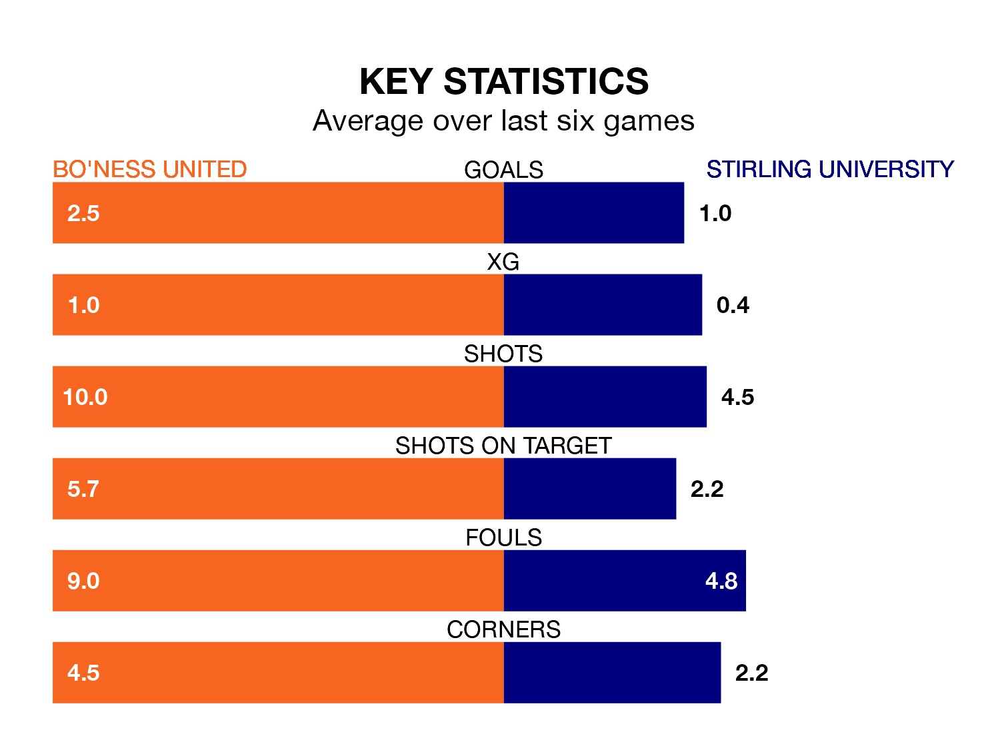

Stirling University travel to Bo'ness United on Saturday in the Lowland Football League.
The visitors come into the game on the back of a defeat in their last match, having lost to BSC Glasgow 4-1 at home.
Bo'ness, meanwhile, drew their last match, 1-1 against BSC Glasgow.
With 65 goals in 33 games so far this season, Bo'ness are scoring more than average in the league with 2.0 goals per game. And they are conceding fewer than average, letting in 46 goals at a rate of 1.4 per game.
Stirling University, meanwhile, are below average scorers, with 1.4 goals per game, compared to a league average of 1.7. They have also conceded 1.4 goals per game.
In the last 10 years, Bo'ness and Stirling University have played each other on six occasions. Bo'ness won one of them, Stirling University three, and they drew twice.
On average, Bo'ness scored 1.5 goals and Stirling University 2.2 in those matches.
Their last meeting was on October 22, when Stirling University won 3-1 at home.
United are fourth in the table after 33 games, of which they have won 19 and drawn five, earning 62 points.
The visitors are seven places behind the home team in 11th, with 13 wins and six draws putting them on 45 points.
Bo'ness are in good form in the Lowland Football League, with four wins and a draw from their last six games.
With a win and two draws over that period, Stirling University's form is much worse – they have taken five points from 18, compared to Bo'ness's 13.
Updated: 15:40 (UTC), 18/04/24